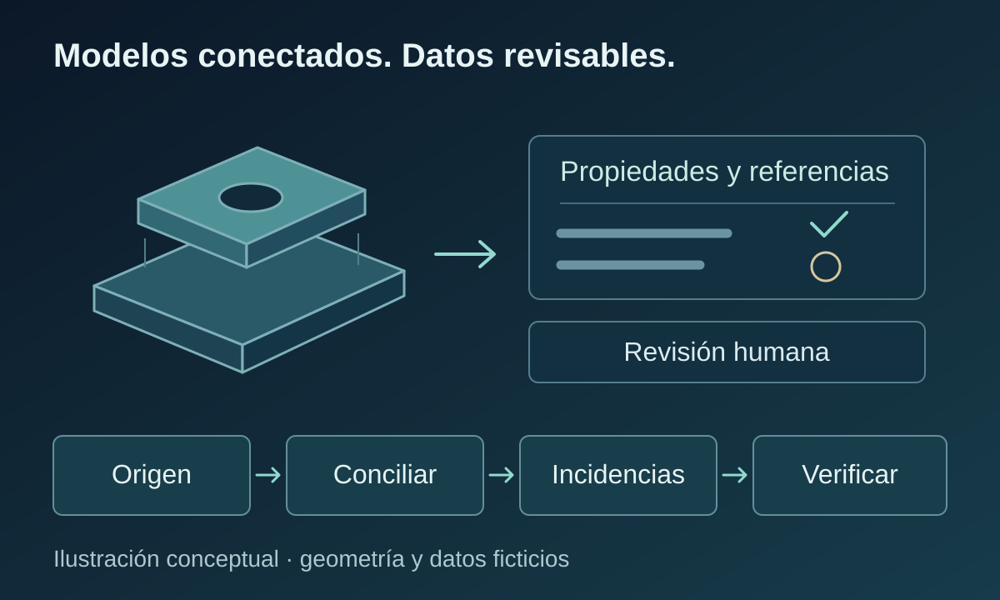

REQUISITOS DE INFORMACIÓN · INTEGRACIÓN Y PRUEBAS
Verificación y reconciliación CAD/IFC
Desarrollo iterativo · validaciones parciales
Definición funcional, integración y pruebas de una herramienta para tratar y comprobar información CAD/IFC, desarrollada con apoyo de IA.
Ver el ejemplo sintético ↓
El problema
Los modelos parciales exportados desde CAD pueden diferir en estructura, colocación o propiedades respecto a una referencia. Compararlos exige reconocer correspondencias y conservar la procedencia de los datos: una diferencia no justifica sobrescribir información correcta ni resolver automáticamente una ambigüedad.
Qué hice
- Definí requisitos funcionales y de información, reglas de comprobación y flujos de revisión.
- Preparé y refiné especificaciones para el desarrollo asistido por IA.
- Integré componentes, diagnostiqué incidencias y revisé los resultados del tratamiento de modelos.
- Realicé pruebas funcionales, de integración y regresión sobre partes del flujo y preparé documentación para su transferencia.
Cómo lo abordé
Separar la correspondencia entre elementos de la decisión sobre sus propiedades. El flujo compara datos y referencia, conserva su origen y deriva las excepciones a revisión técnica. Utilicé Python e IfcOpenShell con IFC, SolidWorks, Navisworks y Excel; los requisitos de información incluyeron reglas de Information Delivery Specification (IDS).
- 01
Preparar
Modelos parciales y fuente de referencia.
- 02
Comparar
Correspondencias y propiedades.
- 03
Revisar
Conflictos y excepciones sin regla inequívoca.
- 04
Comprobar
Integridad y resultados antes de aplicar cambios.
Dos diferencias no requieren la misma decisión.
Ejemplo totalmente inventado. Los componentes A y B y la propiedad «material» son datos ilustrativos; no reproducen identificadores ni propiedades internas.
| Componente ficticio | Datos comparados | Decisión de revisión |
|---|---|---|
| A | Modelo: material vacío. Referencia: acero. | Señalar el dato ausente y proponer completarlo solo si la referencia está validada. |
| B | Modelo: aluminio. Referencia: acero. | Registrar el conflicto. Sin precedencia inequívoca, pedir revisión antes de modificar. |
El informe distingue ausencia y conflicto, identifica la fuente de cada valor y deja la decisión ambigua pendiente de intervención técnica.
Comprobaciones y alcance
Qué comprobé
- Correspondencia de elementos y consistencia de propiedades en las partes del flujo comprobadas.
- Pruebas funcionales y de regresión para detectar cambios no previstos.
- Revisión de resultados y preparación de distribuciones para otros entornos de usuario.
Límites y estado
Las validaciones son parciales y no acreditan un despliegue global. Mi contribución combinó requisitos, integración, criterio de ingeniería y pruebas; el desarrollo se realizó con apoyo de IA.
Implementado y probado parcialmente
Tratamiento y comparación de información, controles de consistencia y comprobaciones sobre partes del flujo.
Propuesto o en evolución
Flujos de recuperación y nuevas capacidades de alineamiento de ensamblajes. Las especificaciones no se presentan como funciones terminadas ni validadas en todos los escenarios.
Criterio transferible
Automatizar una comparación no equivale a automatizar una decisión: los conflictos necesitan reglas explícitas o intervención técnica.
Caso anonimizado. Solo se muestran ilustraciones originales y ejemplos inventados; no documentación ni datos de clientes.